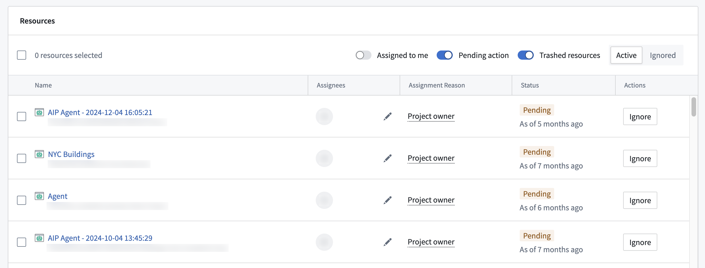
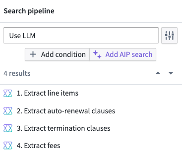
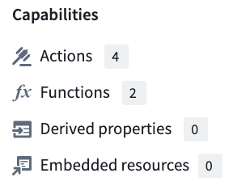
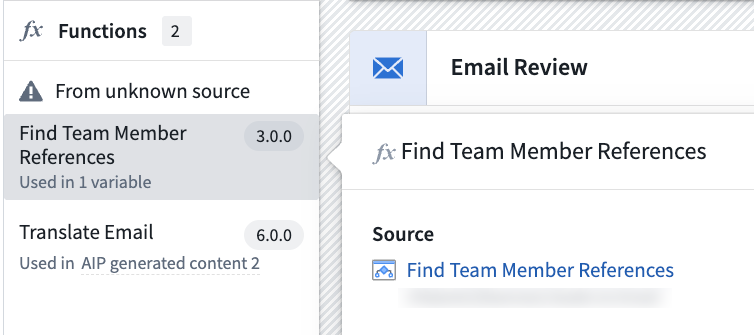
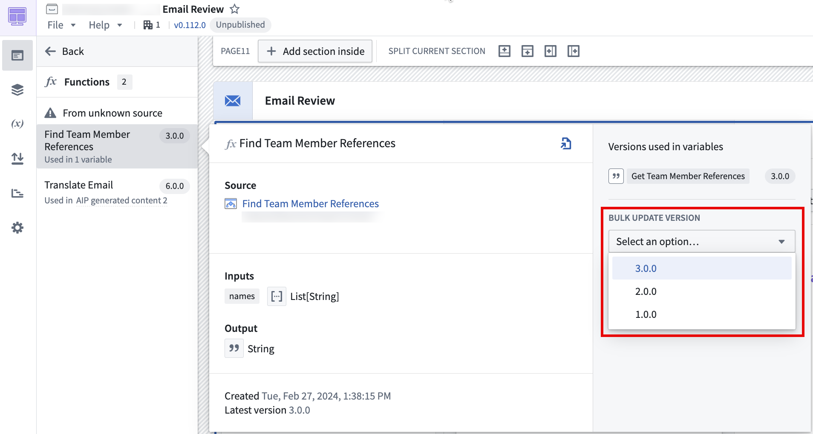
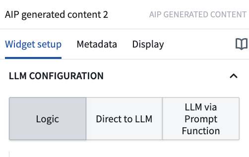
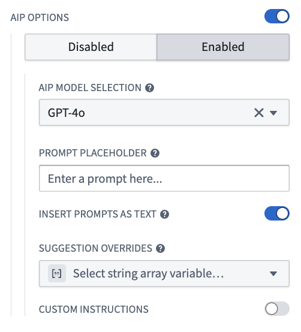
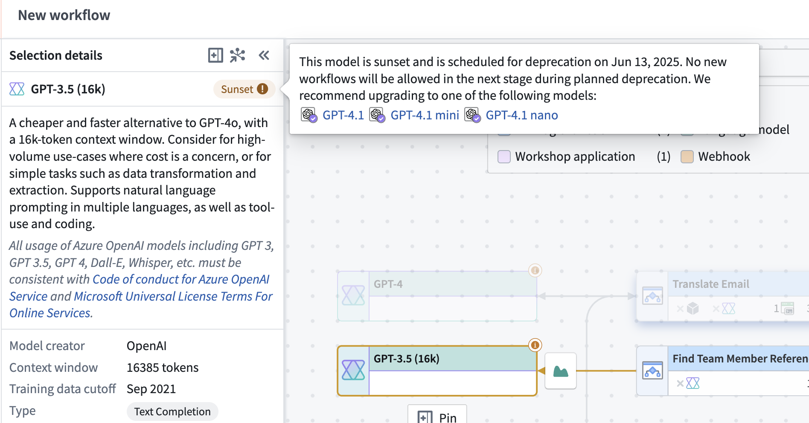
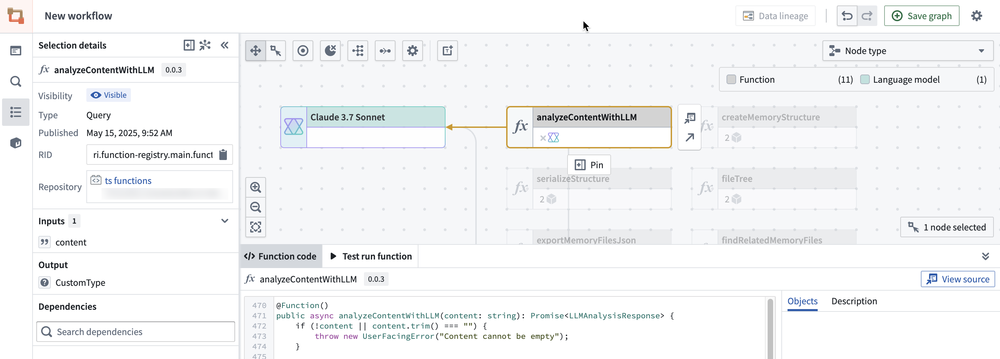
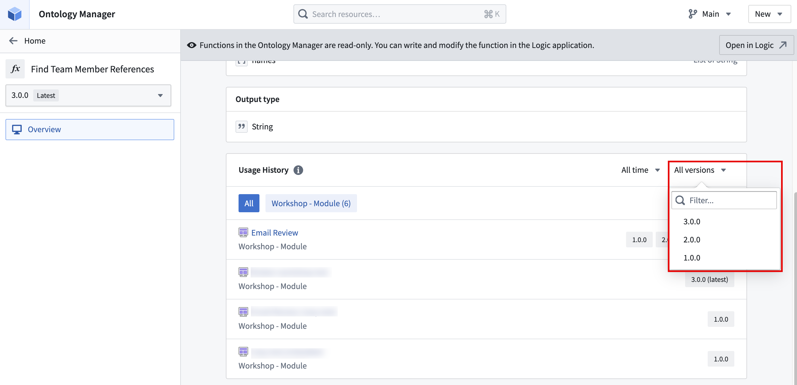

Model providers often deprecate models, which affects workflows that rely on these models and requires users to transition to recommended substitutes. Palantir will notify affected users when providers announce model deprecations, and identify resources that rely on affected models through Upgrade Assistant.
Once notified, we encourage users to plan ahead by migrating any existing workflows that use soon-to-be deprecated models onto the recommended substitutes. Users will be notified of migration due dates, after which a series of brownout access restrictions to the model will be implemented to facilitate the migration process for any remaining workflows.
If no action is taken by the brownout due date, workflows using deprecated models will fail and output the following error message during brownouts:
{
"errorCode": "NOT_FOUND",
"errorName": "LanguageModelService:LanguageModelNotAvailable",
"errorInstanceId": "<error instance id>",
"parameters": {
"safeParams": "{languageModelRid=<language model rid>, deprecationDate=<deprecation date>, brownoutStart=<brown-out start>, brownoutEnd=<brown-out end>}",
"unsafeParams": "{}",
"message": "Unable to use model: language model is in planned deprecation and is currently under a brown-out"
}
}
Likewise, if no action is taken by the providerâs model deprecation date, workflows that use deprecated models will fail and output the error message below until the workflow is migrated to an alternate model:
{
"errorCode": "NOT_FOUND",
"errorName": "LanguageModelService:LanguageModelNotAvailable",
"errorInstanceId": "<error instance id>",
"parameters": {
"safeParams": "{languageModelRid=<language model rid>, deprecationDate=<deprecation date>}",
"unsafeParams": "{}",
"message": "Unable to use model: language model is deprecated"
}
}
Model brownouts serve as a strategy to guide users away from models that are being deprecated. Brownouts introduce deliberate, temporary instability to signal impending changes and avoid abruptly discontinuing service for users that did not action the affected resources listed in Upgrade Assistant.
Each model follows a specific brownout schedule. To view the brownout schedule for a model undergoing deprecation, including the number of stages, start dates, and duration, refer to the deprecated modelâs Upgrade Assistant description page.
To successfully migrate away from deprecated models and avoid disruption of critical workflows, proceed with the following steps:
Navigate to Upgrade Assistant and open the relevant model deprecation page in the Active upgrades section. On the deprecated model's description page, scroll down to the Resources section to see a list of resources affected by this model deprecation.

Resources are marked for migration based on the following criteria:
PENDING. This indicates that the model used in this resource still needs to be migrated.COMPLETED, since usage of a different model indicates that this resource was migrated.In rare cases, resources may be marked as COMPLETED, and then revert back to PENDING. This can occur if a resource makes a new call to a deprecated model. To prevent this, ensure that resources such as Workshop modules update to the latest version of affected functions after the function has been saved and published.
Resources that are configured to use a deprecated model, but have not been actively used during the course of the migration period will not appear in the Upgrade Assistant resource list. For example, if a pipeline is configured to use a deprecated model, but has not been built during the migration period, it will not appear in the Upgrade Assistant resource list, as it is not actively calling a deprecated model. In such cases, we advise taking inventory of your production workflows and using the tools in the section below to understand resource usage and assess whether migration is necessary.
In the Upgrade Assistant description page, select a resource to navigate to the resource application. Depending on the resource type, the process to migrate to a new model may vary. For each affected resource, you must identify how the deprecated model is used, such as in Use LLM nodes in Pipeline Builder and AIP Logic, or code references in transforms. You may need to navigate to additional upstream resources to select a new model for your workflow.
To prevent disruptions in your workflows from deprecated models, a new model needs to be selected. Each deprecated model description page in Upgrade Assistant will include potential substitutes, but we highly encourage setting up evaluation suites in AIP Evals to ensure that you are using the best model for your use case.
Upgrade Assistant identifies resources that use soon-to-be deprecated models, and each resource type needs to be resolved differently. Some resources can be configured directly, and the model selector can be used to choose a new model. In other resource types, such as Workshop modules or pipelines, models may be called from upstream resources, such as AIP Logic functions or Code Repositories transforms. In these cases, model selection needs to occur in the upstream resource that contains the model configuration options. See the sections below for more details on resource types.
:::callout{theme="warning"} Users must have view and edit permissions on the affected resources. Otherwise, it will not be possible to properly examine resources such as pipelines and Workshop modules to find the root upstream resource for model configuration. :::
If the deprecated model was chosen with the model selector, a new model can be chosen in the same way. When navigating to resources such as Logic functions and AIP Chatbots (formerly known as AIP Agents), open the resource configuration settings and use the model selector to choose a new model.
Applications that support model selector include:
Resource configuration settings will display an alert next to the affected model, and it will be labeled as Sunset.
To choose a substitute model, open model selector and choose a new model.

For Pipeline Builder resources, Upgrade Assistant will link to the entire pipeline, rather than the specific affected node. In order to efficiently find relevant nodes in large pipelines, use the Pipeline Builder search functionality.
Navigate to the affected pipeline by selecting it from the list of resources in the Upgrade Assistant model deprecation page.
Select the search icon in the upper-right corner of the pipeline graph.

Enter âuse LLMâ as a search term to view a list of all Use LLM nodes in the pipeline. All search results will also be highlighted with the color shown in the pipeline graph legend.

From the listed results, select each node to highlight it in the pipeline graph. Right click the selected node and select Edit from the context menu. This will open the node configuration page.
Navigate to the Model section, which will indicate an alert icon next to the model name if the model is being deprecated. If this alert is present, select Show configurations and select a new model from the Model type dropdown.
Repeat this process for all Use LLM nodes in the pipeline.
Save, deploy, and rebuild your pipeline.
Model usage in Workshop can originate from AIP widgets or referenced functions, such as AIP Logic functions. Depending on the source, the model can be changed from widget configuration settings or from the configuration settings of upstream resources, such as an AIP Logic function or an AIP Chatbot. You can navigate to affected Workshop modules by selecting them from the list of resources in the Upgrade Assistant model deprecation page. Enter edit mode to view module configuration settings.
Note that users need to have edit permissions on affected Workshop modules. Follow the instructions below to address function-based and widget-based model usage.
To identify the functions used in a Workshop module, open the Overview panel in the upper-left corner of your workspace. Under the Capabilities section, select Functions.

In the Functions panel, select each function to view the function source.

Select the function source to navigate to the source application, in this case AIP Logic. From this source, you can configure model settings and select a new model if the function uses a deprecated model.
Save and publish a new version of the function.
Back in Workshop, navigate to the Functions section in the Overview panel as specified in step 1. Select the updated function, and use the function version dropdown under the Bulk update version section to select the latest version of the function for all variables or widgets.

Repeat this process for all listed functions.
Widget-based model configuration depends on the type of widget used. Review the following options and follow the instructions for the widgets used in your Workshop module:
AIP chatbot: The AIP Chatbot widget uses chatbots, so model configuration must take place in the chatbot configuration settings in AIP Chatbot Studio. 1. In the widget configuration panel, select the chatbot in use to open it in Chatbot Studio. 2. Edit the chatbot by selecting Edit in the upper-right corner of the chatbot interface. 3. Open the chatbot configuration panel and select a new model from the model selector. 4. Save and publish your chatbot.
AIP generated content: For the AIP generated content widget, model usage can only be configured in Workshop if the widget uses the Direct to LLM or LLM via prompt function options. Otherwise, it can be configured in the referenced Logic function.

Direct to LLM/LLM via prompt function: A new model can be selected using the model selector in the widget configuration settings.
Logic: If the widget uses the Logic option, the Logic function will be listed under the moduleâs functions in the Overview panel. Refer to the function-based model usage section for more details.
Free-form analysis: Model usage for the free-form analysis widget can be configured directly in Workshop. In the widget configuration settings, toggle on AIP options and select Enabled to configure model settings. Then, select a new model from the model selector.

Logic - Chain of thought: This widget uses Logic functions, which are listed in the Overview panel. Refer to the function-based model usage section for more details.
Ensure that you save and publish your Workshop module after any changes.
For code-based model usage, Upgrade Assistant will list the containing code repository, code workspace, or downstream resource, rather than the exact code file or function that contains references to the deprecated model. For cases where the downstream resource is flagged, review the Workshop model usage and additional tools sections. In cases where the code repository or workspace is flagged, open the repository or workspace listed in the Upgrade Assistant resource list. In the repository or workspace, you can replace instances of deprecated model usage with a new model.
TypeScript v1 and TypeScript v2 select the model differently, which changes what a migration requires:
params object.The openai library used in the TypeScript v2 example is not pre-installed. Install it from the Libraries section of the left side panel.
Models are selected and used as shown in the TypeScript v1, TypeScript v2, and Python examples below:
```typescript tab="TypeScript v1" import { Function } from "@foundry/functions-api" // A deprecated model is imported import { GPT_4_5 } from "@foundry/models-api/language-models"
/*
* Used to send a text completion request to the model based on user input
* @param {string} userInput - Text input to send to model
/
export class MyFunctions {
@Function()
public async createChatCompletion(userInput: string): Promise
```typescript tab="TypeScript v2"
import { PlatformClient } from "@osdk/client";
import OpenAI from "openai";
import { Aliases } from "@osdk/functions";
import { getFoundryToken, getOpenAiBaseUrl, createFetch } from "@osdk/language-models";
export default async function createChatCompletion(client: PlatformClient, userInput: string): Promise<string> {
const oaiClient = new OpenAI({
apiKey: await getFoundryToken(client),
baseURL: getOpenAiBaseUrl(client),
fetch: createFetch(client),
});
const completion = await oaiClient.chat.completions.create({
// Deprecated model usage through its alias
model: Aliases.model("gpt45").rid,
messages: [
{ role: "user", content: userInput },
],
max_completion_tokens: 1000,
});
return completion.choices[0]?.message.content ?? "";
}
```python tab="Python" from transforms.api import transform, Input, Output from palantir_models.transforms import OpenAiGptChatLanguageModelInput from palantir_models.models import OpenAiGptChatLanguageModel from language_model_service_api.languagemodelservice_api_completion_v3 import GptChatCompletionRequest from language_model_service_api.languagemodelservice_api import ChatMessage, ChatMessageRole
@transform( reviews=Input("Input Dataset Rid"), # Deprecated model usage model=OpenAiGptChatLanguageModelInput("ri.language-model-service..language-model.gpt-4-5"), output=Output("Output dataset rid or path"), ) def compute_sentiment(ctx, reviews, model: OpenAiGptChatLanguageModel, output): def get_completions(review_content: str) -> str: system_prompt = "Take the following review determine the sentiment of the review" request = GptChatCompletionRequest( [ChatMessage(ChatMessageRole.SYSTEM, system_prompt), ChatMessage(ChatMessageRole.USER, review_content)] ) resp = model.create_chat_completion(request) return resp.choices[0].message.content
reviews_df = reviews.pandas()
reviews_df['sentiment'] = reviews_df['review_content'].apply(get_completions)
out_df = ctx.spark_session.createDataFrame(reviews_df)
return output.write_dataframe(out_df)
If you are not sure how to import and use a new model, navigate to the [Model Catalog](https://www.palantir.com/docs/foundry/model-catalog/overview/) application for examples of Palantir-provided model usage. Search your code repository or workspace for deprecated model usage, and replace all instances with the recommended model, or a model of your choice. Depending on your workflow, this process may involve creating and merging a new branch to your repository or workspace for upstream function or transform usage to reflect these changes.
In the example above, the deprecated model GPT-4.5 is used. Updating to GPT-4.1 requires a different change in each language.
In TypeScript v2, [import GPT-4.1 into the repository](https://www.palantir.com/docs/foundry/functions/language-models-python-tsv2/#import-a-language-model). The import dialog creates an alias for the new model. Update the alias name passed to `Aliases.model()` to the new alias. The function body names the alias rather than the model. As a result, this update requires a single-line change rather than changes to the import statement and every TypeScript v1 call site.
The updated examples are shown below:
```typescript tab="TypeScript v1"
import { Function } from "@foundry/functions-api"
// Import a new model
import { GPT_4_1 } from "@foundry/models-api/language-models"
/**
* Used to send a text completion request to the model based on user input
* @param {string} userInput - Text input to send to model
*/
export class MyFunctions {
@Function()
public async createChatCompletion(userInput: string): Promise<string | undefined> {
// Replace usage of the deprecated model with the new model.
const response = await GPT_4_1.createChatCompletion({
params: {
"temperature": 0,
"maxTokens": 1000,
},
messages: [{ role: "USER", contents: [{ text: userInput }], }],
});
return response.choices[0].message.content;
}
}
```typescript tab="TypeScript v2" import { PlatformClient } from "@osdk/client"; import OpenAI from "openai"; import { Aliases } from "@osdk/functions"; import { getFoundryToken, getOpenAiBaseUrl, createFetch } from "@osdk/language-models";
export default async function createChatCompletion(client: PlatformClient, userInput: string): Promise
const completion = await oaiClient.chat.completions.create({
// Reference the alias for the substitute model.
model: Aliases.model("gpt41").rid,
messages: [
{ role: "user", content: userInput },
],
max_completion_tokens: 1000,
});
return completion.choices[0]?.message.content ?? "";
}
```python tab="Python"
from transforms.api import transform, Input, Output
from palantir_models.transforms import OpenAiGptChatLanguageModelInput
from palantir_models.models import OpenAiGptChatLanguageModel
from language_model_service_api.languagemodelservice_api_completion_v3 import GptChatCompletionRequest
from language_model_service_api.languagemodelservice_api import ChatMessage, ChatMessageRole
@transform(
reviews=Input("Input Dataset Rid"),
# Replace usage of the deprecated model with the new model.
model=OpenAiGptChatLanguageModelInput("ri.language-model-service..language-model.gpt-4-1"),
output=Output("Output dataset rid or path"),
)
def compute_sentiment(ctx, reviews, model: OpenAiGptChatLanguageModel, output):
def get_completions(review_content: str) -> str:
system_prompt = "Take the following review determine the sentiment of the review"
request = GptChatCompletionRequest(
[ChatMessage(ChatMessageRole.SYSTEM, system_prompt), ChatMessage(ChatMessageRole.USER, review_content)]
)
resp = model.create_chat_completion(request)
return resp.choices[0].message.content
reviews_df = reviews.pandas()
reviews_df['sentiment'] = reviews_df['review_content'].apply(get_completions)
out_df = ctx.spark_session.createDataFrame(reviews_df)
return output.write_dataframe(out_df)
LLM usage in Quiver can be configured in the analysis settings. Navigate to the settings tab in the sidebar of the affected analysis, and access the model selector under the AIP Settings section.

Workflows can grow to be complex and unwieldy, making it hard to intuitively find all instances of affected resource usage. Review the sections below to learn more about the tools available to help identify LLM usage in your workflows.
For a better understanding of model usage across resources, you can use Workflow Lineage. Open a Workshop application or function repository in Workflow Lineage by using the keyboard shortcut Cmd + I (macOS) or Ctrl + I (Windows). In the Workflow Lineage graph, you will be able to view the objects, actions, and functions that back an application.

Workflow Lineage can help action model migrations for Workshop with its bulk update features. After updating a function as shown in the function-based model usage section, you can open the Workshop application in Workflow Lineage to bulk update the function version used across one or all dependent Workshop applications. Additionally, Workflow Lineage enables you to replace language models in bulk across multiple AIP Logic functions from the lineage graph with a single action.

For more information on Workflow Lineage's complete set of features, refer to the Workflow Lineage usage documentation.
Once you have identified a function that contains a deprecated model, you can open it in Ontology Manager to track the resources that use this function. You can then navigate to those resources and update the function version to ensure uninterrupted service. In the case of Workshop applications, you can use Workflow Lineage as described in the section above to update function versions in bulk.
To view function usage, navigate to Ontology Manager and select Functions in the sidebar. On the functions page, you can search for the function name and select it from the Functions table to open its overview page.
In the function overview page, scroll down to the Usage history section to see the list of resources that use this function. You can filter by version to find resources that may be using outdated versions of the function.

You can then navigate to the resources that use this function to update it to the latest version. For more information, refer to the Ontology Manager function type view documentation.